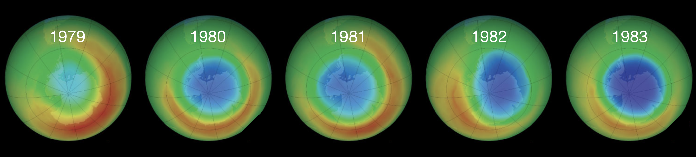
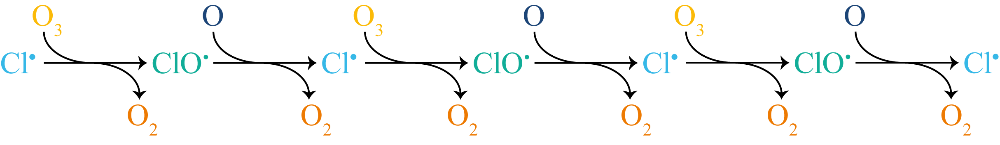
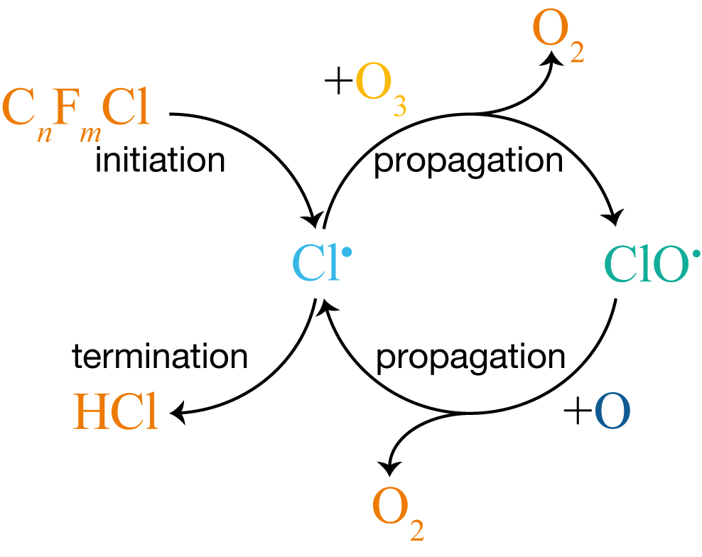
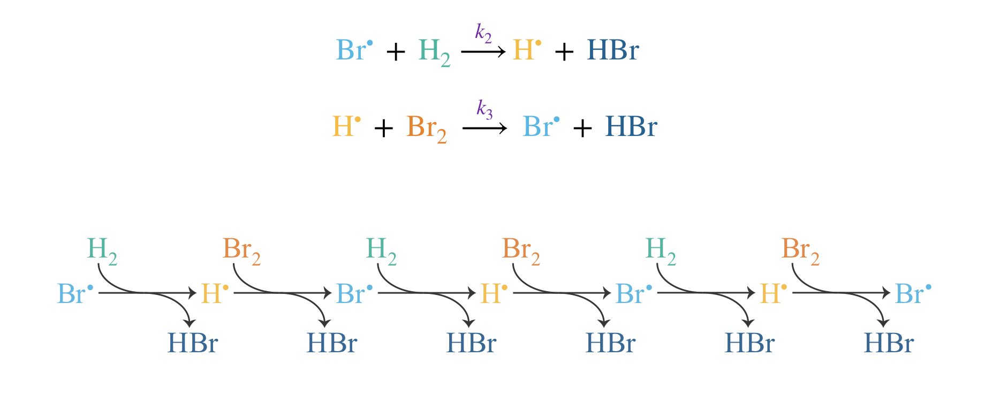
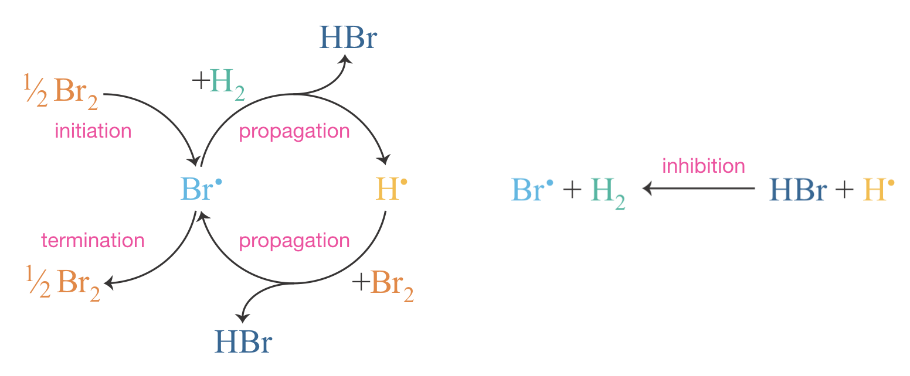

Lecture 9 Chain Reactions
We have seen how to write rate equations for multi-step mechanisms and use the SSA to derive overall rate laws for systems with reactive intermediates. In every case so far, those intermediates are consumed as they form products, leading to steady, predictable kinetics. Not all reactions behave so tamely. In a chain reaction, reactive intermediates are regenerated by the very steps that form the products, creating a self-sustaining cycle that can sustain a steady flame or trigger a violent explosion. A single radical may cycle through the propagation loop hundreds of times before termination removes it — but how much damage does it do along the way?
9.1 The Ozone Layer and CFC-Catalysed Destruction
The ozone layer in the stratosphere absorbs nearly 98% of the Sun’s ultraviolet radiation, shielding DNA and other biological molecules at the Earth’s surface. In the 1970s, scientists discovered that chlorofluorocarbons (CFCs), widely used as refrigerants and aerosol propellants, were depleting this protective layer through a chain reaction. This discovery, which led to the 1995 Nobel Prize in Chemistry for Crutzen, Molina, and Rowland, provides a vivid example of how a tiny concentration of reactive intermediates can destroy a vastly larger amount of substrate. Figure 9.1 shows the consequences: satellite observations over Antarctica reveal the progressive development of the ozone hole over just five years.

Figure 9.1: Satellite observations of total column ozone over Antarctica from 1979 to 1983. Blue and purple regions indicate depleted ozone.
The mechanism involves three types of elementary step:
Initiation: \[\mathrm{C_nF_mCl} + h\nu \xrightarrow{k_1} \mathrm{C_nF_m}^{\bullet} + \mathrm{Cl}^{\bullet}\]
Propagation: \[\begin{align*} \mathrm{Cl}^{\bullet} + \mathrm{O_3} &\xrightarrow{k_2} \mathrm{ClO}^{\bullet} + \mathrm{O_2} \\ \mathrm{ClO}^{\bullet} + \mathrm{O} &\xrightarrow{k_3} \mathrm{Cl}^{\bullet} + \mathrm{O_2} \end{align*}\]
Termination: \[\mathrm{Cl}^{\bullet} + \mathrm{CH_4} \xrightarrow{k_4} \mathrm{CH_3}^{\bullet} + \mathrm{HCl}\]
The first step creates reactive intermediates from stable molecules; this is the initiation step. Here, UV radiation breaks a C–Cl bond in a CFC molecule, releasing a chlorine radical. The rate of initiation is typically much lower than the rate of propagation (in this case it requires a UV photon of the right wavelength) and may require an external energy source such as heat, light, or a chemical initiator.
Once formed, \(\mathrm{Cl}^{\bullet}\) enters the propagation cycle: a sequence of steps that regenerate the reactive intermediate while forming products. The first step consumes \(\mathrm{Cl}^{\bullet}\) and produces \(\mathrm{ClO}^{\bullet}\); the second consumes \(\mathrm{ClO}^{\bullet}\) and regenerates \(\mathrm{Cl}^{\bullet}\). The atomic oxygen in the second step is produced by UV photolysis of O2 in the stratosphere. Atomic oxygen is itself a radical species (it has two unpaired electrons), though by convention it is written without a radical dot. The two propagation steps repeat in alternation: each radical produces the next, forming a self-sustaining chain (Figure 9.2).

Figure 9.2: The propagation steps of CFC-catalysed ozone destruction shown as a linear chain. Each step converts one radical into the next, producing O\(_2\) at every stage. The chain extends until a termination step removes Cl\(^\bullet\) from the cycle.
Each turn of the cycle destroys one molecule of O3 and one atom of O, converting them to two molecules of O2. The net reaction is:
\[\mathrm{O_3} + \mathrm{O} \rightarrow 2\mathrm{O_2}\]
The chlorine radical emerges unchanged; it is a catalyst, recycled indefinitely by the propagation cycle. The chain ends when a termination step removes the reactive intermediate permanently — here by converting \(\mathrm{Cl}^{\bullet}\) into the stable molecule HCl. Other termination pathways exist (such as \(\mathrm{ClO}^{\bullet} + \mathrm{NO_2} \rightarrow \mathrm{ClONO_2}\)), but the essential point is the same: termination stops the chain by removing the chain-carrying intermediate.
This pattern of initiation, propagation, and termination is common to all chain reactions. Figure 9.3 shows the complete CFC mechanism as a cycle, with all three types of step labelled.

Figure 9.3: The CFC-catalysed ozone destruction mechanism represented as a cycle. Initiation (UV photolysis of a CFC) creates Cl\(^\bullet\), which enters the propagation loop: Cl\(^\bullet\) and ClO\(^\bullet\) interconvert, destroying O\(_3\) and O to form O\(_2\) at each step. Termination removes Cl\(^\bullet\) by reaction with CH\(_4\), forming HCl.
The competition between propagation and termination determines how much damage each chlorine radical does before it is removed: each turn of the propagation cycle destroys one molecule of ozone, and the cycle repeats until termination converts \(\mathrm{Cl}^{\bullet}\) to HCl. So how many molecules of ozone does a single chlorine radical destroy?
9.2 The H2 + Br2 Reaction
The CFC-ozone reaction is a straightforward chain: a single radical carrier (\(\mathrm{Cl}^{\bullet}\)) cycles through one propagation loop until termination removes it. Not all chain reactions are so simple. In Lecture 1, we met the gas-phase reaction of hydrogen with bromine as an example of a complex rate law, and listed the five elementary steps responsible — but did not yet have the tools to connect mechanism to rate law. The overall reaction,
\[\mathrm{H_2} + \mathrm{Br_2} \rightarrow 2\mathrm{HBr}\]
appears simple; from the stoichiometry alone, we might expect a rate law such as \(\nu = k[\mathrm{H_2}][\mathrm{Br_2}]\). The experimentally determined rate law, however, is quite different:
\[\begin{equation} \nu = \frac{k[\mathrm{H_2}][\mathrm{Br_2}]^{1/2}}{1 + k'[\mathrm{HBr}]/[\mathrm{Br_2}]} \tag{9.1} \end{equation}\]
This rate law has two unusual features: a fractional power of \([\mathrm{Br_2}]^{1/2}\) in the numerator, and a term in the denominator that involves the product HBr (which means the overall order with respect to Br2 is not even defined). Neither feature can arise from a single elementary step, since elementary steps always have small integer orders. Both must originate from the underlying chain mechanism.
9.2.1 The Mechanism
The reaction proceeds through a sequence of elementary steps involving two reactive intermediates, bromine radicals (\(\mathrm{Br}^{\bullet}\)) and hydrogen radicals (\(\mathrm{H}^{\bullet}\)):
Initiation: \[\mathrm{Br_2} + \mathrm{M} \xrightarrow{k_1} 2\mathrm{Br}^{\bullet} + \mathrm{M}\]
Here \(\mathrm{M}\) represents any molecule in the gas mixture, acting as a collision partner that provides the energy needed to break the Br–Br bond. The chain starts with Br2 rather than H2 because the Br–Br bond (\(194\,\mathrm{kJ\,mol}^{-1}\)) is much weaker than the H–H bond (\(436\,\mathrm{kJ\,mol}^{-1}\)), making Br2 dissociation far more favourable at moderate temperatures.
Propagation: \[\begin{align*} \mathrm{Br}^{\bullet} + \mathrm{H_2} &\xrightarrow{k_2} \mathrm{H}^{\bullet} + \mathrm{HBr} \\ \mathrm{H}^{\bullet} + \mathrm{Br_2} &\xrightarrow{k_3} \mathrm{Br}^{\bullet} + \mathrm{HBr} \end{align*}\]
These two steps repeat in sequence, forming a chain in which each radical produces the next (Figure 9.4). Each link in the chain produces one molecule of HBr.

Figure 9.4: The propagation steps of the H\(_2\) + Br\(_2\) reaction shown as a linear chain. Each pair of steps converts Br\(^\bullet\) to H\(^\bullet\) and back again, producing one molecule of HBr at each step. The chain extends until a termination or inhibition step interrupts it.
This mechanism also features a step not present in the ozone example. Some chain reactions have inhibition steps that consume intermediates unproductively, regenerating reactants rather than forming products. Here, the reverse of the first propagation step diverts \(\mathrm{H}^{\bullet}\) without forming product:
Inhibition (reverse of first propagation step): \[\mathrm{H}^{\bullet} + \mathrm{HBr} \xrightarrow{k_{-2}} \mathrm{Br}^{\bullet} + \mathrm{H_2}\]
Termination: \[2\mathrm{Br}^{\bullet} + \mathrm{M} \xrightarrow{k_4} \mathrm{Br_2} + \mathrm{M}\]
Bond energies also determine which radical is present in higher concentration. Both propagation steps form an H–Br bond (\(366\,\mathrm{kJ\,mol}^{-1}\)), but they differ in the bond they break: the first step (\(k_2\)) breaks the strong H–H bond (\(436\,\mathrm{kJ\,mol}^{-1}\)), making it endothermic overall, while the second (\(k_3\)) breaks the much weaker Br–Br bond (\(194\,\mathrm{kJ\,mol}^{-1}\)), making it strongly exothermic. For closely related reactions that involve the same type of bond-forming step, exothermic reactions tend to have lower activation barriers than endothermic ones. Here that means \(k_3 \gg k_2\). We can see the consequences by noting that at steady state the two propagation steps must proceed at equal rates — the cycle cannot pass through one half faster than the other. Setting \(k_2[\mathrm{Br}^{\bullet}][\mathrm{H_2}] = k_3[\mathrm{H}^{\bullet}][\mathrm{Br_2}]\) and rearranging gives:
\[\frac{[\mathrm{Br}^{\bullet}]}{[\mathrm{H}^{\bullet}]} = \frac{k_3}{k_2}\,\frac{[\mathrm{Br_2}]}{[\mathrm{H_2}]}\]
Since \(k_3 \gg k_2\) and the reactant concentrations are comparable, we find \([\mathrm{Br}^{\bullet}] \gg [\mathrm{H}^{\bullet}]\) throughout the reaction. This has a direct consequence for termination. We might ask: why does the mechanism include only Br•+Br• recombination, and not H•+H• or H•+Br•? The answer is that all three processes occur, but because \([\mathrm{Br}^{\bullet}]\) is so much larger than \([\mathrm{H}^{\bullet}]\), Br•+Br• encounters are overwhelmingly more frequent, making all other termination pathways negligible. Figure 9.5 illustrates the complete mechanism as a cycle.

Figure 9.5: The cyclic nature of the H\(_2\) + Br\(_2\) chain reaction. Bromine radicals are consumed in one propagation step and regenerated in the next, creating a self-sustaining cycle that produces two molecules of HBr per turn. The inhibition step diverts H\(^\bullet\) back to Br\(^\bullet\) without forming product.
9.2.2 Deriving the Rate Law Using the SSA
We apply the SSA to both radical intermediates, setting each rate of change to zero. In what follows, we absorb the constant concentration of the collision partner \(\mathrm{M}\) into the rate constants \(k_1\) and \(k_4\).
For \(\mathrm{Br}^{\bullet}\), we write down every elementary step that produces or consumes it. Initiation (which creates two \(\mathrm{Br}^{\bullet}\) per event), the second propagation step, and the inhibition step all produce \(\mathrm{Br}^{\bullet}\); the first propagation step and termination (which destroys two) consume it. Setting the total rate of change to zero:
\[\begin{equation} \frac{\mathrm{d}[\mathrm{Br}^{\bullet}]}{\mathrm{d}t} = 2k_1[\mathrm{Br_2}] - k_2[\mathrm{Br}^{\bullet}][\mathrm{H_2}] + k_3[\mathrm{H}^{\bullet}][\mathrm{Br_2}] + k_{-2}[\mathrm{H}^{\bullet}][\mathrm{HBr}] - 2k_4[\mathrm{Br}^{\bullet}]^2 = 0 \tag{9.2} \end{equation}\]
We now do the same for \(\mathrm{H}^{\bullet}\), which is produced only by the first propagation step and consumed by the second propagation step and the inhibition step:
\[\begin{equation} \frac{\mathrm{d}[\mathrm{H}^{\bullet}]}{\mathrm{d}t} = k_2[\mathrm{Br}^{\bullet}][\mathrm{H_2}] - k_3[\mathrm{H}^{\bullet}][\mathrm{Br_2}] - k_{-2}[\mathrm{H}^{\bullet}][\mathrm{HBr}] = 0 \tag{9.3} \end{equation}\]
Each of these equations involves both unknown radical concentrations, which makes them look difficult to solve. But notice what happens when we add them together. Every propagation and inhibition term appears with a positive sign in one equation and a negative sign in the other, so they cancel exactly:
\[2k_1[\mathrm{Br_2}] - 2k_4[\mathrm{Br}^{\bullet}]^2 = 0\]
This makes physical sense: the propagation cycle merely interconverts \(\mathrm{Br}^{\bullet}\) and \(\mathrm{H}^{\bullet}\) without changing the total number of radicals. Only initiation (which creates radicals) and termination (which destroys them) affect the total, and at steady state these two processes must balance. Solving for \([\mathrm{Br}^{\bullet}]\):
\[\begin{equation} [\mathrm{Br}^{\bullet}]_\mathrm{ss} = \sqrt{\frac{k_1}{k_4}}\,[\mathrm{Br_2}]^{1/2} \tag{9.4} \end{equation}\]
This result accounts for the \([\mathrm{Br_2}]^{1/2}\) dependence in the experimental rate law: it comes from the square root in the steady-state radical concentration, which in turn arises because termination is second order in \(\mathrm{Br}^{\bullet}\) (two radicals must meet to recombine).
To find \([\mathrm{H}^{\bullet}]_\mathrm{ss}\), we return to the \(\mathrm{H}^{\bullet}\) balance (Eqn. (9.3)) and solve for \([\mathrm{H}^{\bullet}]\):
\[\begin{equation} [\mathrm{H}^{\bullet}]_\mathrm{ss} = \frac{k_2[\mathrm{Br}^{\bullet}]_\mathrm{ss}[\mathrm{H_2}]}{k_3[\mathrm{Br_2}] + k_{-2}[\mathrm{HBr}]} \tag{9.5} \end{equation}\]
The overall rate of HBr formation includes contributions from both propagation steps (which produce HBr) and the inhibition step (which consumes it):
\[\nu = k_2[\mathrm{Br}^{\bullet}][\mathrm{H_2}] + k_3[\mathrm{H}^{\bullet}][\mathrm{Br_2}] - k_{-2}[\mathrm{H}^{\bullet}][\mathrm{HBr}]\]
Substituting the steady-state concentrations from Eqns. (9.4) and (9.5) and simplifying (this algebra is not examinable) gives:
\[\begin{equation} \nu = \frac{2k_2\sqrt{k_1/k_4}\,[\mathrm{H_2}][\mathrm{Br_2}]^{1/2}}{1 + (k_{-2}/k_3)[\mathrm{HBr}]/[\mathrm{Br_2}]} \tag{9.6} \end{equation}\]
This matches the experimental rate law (Eqn. (9.1)) exactly, with \(k = 2k_2\sqrt{k_1/k_4}\) and \(k' = k_{-2}/k_3\).
The inhibition term in the denominator has a clear physical origin. The inhibition step (\(\mathrm{H}^{\bullet} + \mathrm{HBr} \rightarrow \mathrm{Br}^{\bullet} + \mathrm{H_2}\)) competes with the second propagation step (\(\mathrm{H}^{\bullet} + \mathrm{Br_2} \rightarrow \mathrm{Br}^{\bullet} + \mathrm{HBr}\)). Both consume \(\mathrm{H}^{\bullet}\), but only the propagation step produces HBr. The ratio \([\mathrm{HBr}]/[\mathrm{Br_2}]\) in the denominator captures this competition: as product accumulates relative to reactant, inhibition becomes increasingly important and the reaction slows down.
We can see this clearly by examining limiting cases. Early in the reaction, when very little HBr has formed, the denominator approaches 1 and the rate law simplifies to \(\nu \approx k[\mathrm{H_2}][\mathrm{Br_2}]^{1/2}\) — a straightforward three-halves order law. As the reaction progresses and HBr accumulates while Br2 is consumed, the ratio \([\mathrm{HBr}]/[\mathrm{Br_2}]\) grows, the denominator increases, and the rate drops. The reaction progressively inhibits itself. Because HBr appears in both numerator and denominator of the full rate law, the order with respect to HBr is not well defined — but in the limit of high \([\mathrm{HBr}]/[\mathrm{Br_2}]\), the apparent order approaches \(-1\). This self-inhibition and the concept of negative apparent orders are explored further in Appendix F.
9.3 Chain Length
How many propagation cycles does a chain carrier complete before termination removes it? Consider what can happen to a radical at any given moment: it can either propagate (continuing the chain) or be terminated (ending it). The relative likelihood of these two fates depends on their rates, so we define the chain length \(\bar{\nu}\) as their ratio:
\[\begin{equation} \bar{\nu} = \frac{\nu_\mathrm{prop}}{\nu_\mathrm{term}} \tag{9.7} \end{equation}\]
At steady state, the rate of initiation equals the rate of termination (\(\nu_\mathrm{init} = \nu_\mathrm{term}\)), so the chain length is equivalently \(\nu_\mathrm{prop}/\nu_\mathrm{init}\).
For the H2 + Br2 reaction, we consider the chain length early in the reaction, where inhibition is negligible and the rate law reduces to \(\nu \approx k[\mathrm{H_2}][\mathrm{Br_2}]^{1/2}\). Using the same effective rate constants \(k_1\) and \(k_4\) that absorb \([\mathrm{M}]\) (as in the SSA derivation above), the rates of propagation and termination are:
- Propagation (\(\mathrm{Br}^{\bullet} + \mathrm{H_2}\)): \(\nu_\mathrm{prop} = k_2[\mathrm{Br}^{\bullet}][\mathrm{H_2}]\)
- Termination (\(2\mathrm{Br}^{\bullet} \rightarrow \mathrm{Br_2}\)): \(\nu_\mathrm{term} = k_4[\mathrm{Br}^{\bullet}]^2\)
Taking the ratio:
\[\bar{\nu}_\mathrm{HBr} = \frac{k_2[\mathrm{Br}^{\bullet}][\mathrm{H_2}]}{k_4[\mathrm{Br}^{\bullet}]^2} = \frac{k_2[\mathrm{H_2}]}{k_4[\mathrm{Br}^{\bullet}]}\]
One power of \([\mathrm{Br}^{\bullet}]\) cancels, but one remains: because termination is second order in the radical (two \(\mathrm{Br}^{\bullet}\) must meet to recombine), the chain length depends on the radical concentration itself. Substituting \([\mathrm{Br}^{\bullet}]_\mathrm{ss} = \sqrt{k_1/k_4}\,[\mathrm{Br_2}]^{1/2}\) from Eqn. (9.4) gives the chain length in terms of measurable quantities:
\[\bar{\nu}_\mathrm{HBr} = \frac{k_2[\mathrm{H_2}]}{\sqrt{k_1 k_4}\,[\mathrm{Br_2}]^{1/2}}\]
This is the chain length early in the reaction, when inhibition is negligible. To see how inhibition affects the chain length, consider what happens after the first propagation step produces \(\mathrm{H}^{\bullet}\):
\[\mathrm{Br}^{\bullet} + \mathrm{H_2} \xrightarrow{k_2} \mathrm{H}^{\bullet} + \mathrm{HBr}\]
The \(\mathrm{H}^{\bullet}\) radical now has two possible fates. If it undergoes the second propagation step (\(\mathrm{H}^{\bullet} + \mathrm{Br_2} \rightarrow \mathrm{Br}^{\bullet} + \mathrm{HBr}\)), the cycle is productive: two molecules of HBr have been formed, and \(\mathrm{Br}^{\bullet}\) is returned to the chain. If instead it undergoes inhibition (\(\mathrm{H}^{\bullet} + \mathrm{HBr} \rightarrow \mathrm{Br}^{\bullet} + \mathrm{H_2}\)), the cycle reverts: the inhibition step exactly reverses the first propagation step — one HBr made, one consumed; one H2 consumed, one regenerated. The net reaction is nothing, yet \(\mathrm{Br}^{\bullet}\) is still returned to the chain.
This is the subtle point: inhibition does not end the chain. The radical comes back either way. But each reverted half-cycle is another opportunity for termination, with no product to show for it. The chain length counts completed productive cycles per termination event, so reverted cycles reduce it. The fraction of \(\mathrm{H}^{\bullet}\) that propagates productively is \(k_3[\mathrm{Br_2}]/(k_3[\mathrm{Br_2}] + k_{-2}[\mathrm{HBr}])\), and the general chain length acquires the same inhibition factor that appears in the rate law:
\[\bar{\nu}_\mathrm{HBr} = \frac{k_2[\mathrm{H_2}]}{\sqrt{k_1 k_4}\,[\mathrm{Br_2}]^{1/2}} \cdot \frac{1}{1 + (k_{-2}/k_3)[\mathrm{HBr}]/[\mathrm{Br_2}]}\]
As HBr accumulates and Br2 is consumed, the inhibition term grows and the chain length shrinks — each successive chain produces less product before being terminated. While \([\mathrm{Br_2}]\) has not been substantially consumed, the rate of initiation (\(k_1[\mathrm{Br_2}]\)) is approximately constant and the chain length is proportional to the overall rate. The individual elementary rate constants do not change as the reaction proceeds; what changes is the chain length. The reaction slows down precisely because the chains are getting shorter.
9.3.1 Returning to Ozone
How many ozone molecules does a single chlorine radical destroy? As for HBr, we write down the rates of propagation and termination and take the ratio. For the CFC mechanism from Section 9.1:
- Propagation (\(\mathrm{Cl}^{\bullet} + \mathrm{O_3}\)): \(\nu_\mathrm{prop} = k_2[\mathrm{Cl}^{\bullet}][\mathrm{O_3}]\)
- Termination (\(\mathrm{Cl}^{\bullet} + \mathrm{CH_4}\)): \(\nu_\mathrm{term} = k_4[\mathrm{Cl}^{\bullet}][\mathrm{CH_4}]\)
\[\begin{equation} \bar{\nu}_\mathrm{O_3} = \frac{k_2[\mathrm{Cl}^{\bullet}][\mathrm{O_3}]}{k_4[\mathrm{Cl}^{\bullet}][\mathrm{CH_4}]} = \frac{k_2[\mathrm{O_3}]}{k_4[\mathrm{CH_4}]} \tag{9.8} \end{equation}\]
This time, \([\mathrm{Cl}^{\bullet}]\) cancels completely, because both propagation and termination are first order in the radical. The chain length depends only on the rate constants and the concentrations of stable species, which are directly measurable.
Both \(k_2\) and \(k_4\) are rate constants for elementary bimolecular reactions and can be measured independently in the laboratory (for example, by flash photolysis). At typical stratospheric conditions (~25 km altitude), \(k_2\) is roughly 100 times larger than \(k_4\), and the concentrations of O3 and CH4 are comparable, giving \(\bar{\nu} \sim 10^2\). A single chlorine radical destroys a few hundred molecules of ozone before being converted to HCl by reaction with methane.
If termination permanently removed the radical, this chain length of \(\sim 10^2\) would represent the total ozone destruction per chlorine atom. The widely quoted figure, however, is approximately \(10^5\) ozone molecules destroyed per chlorine atom over its stratospheric lifetime. The difference arises because HCl is not a permanent sink. Reaction with hydroxyl radicals regenerates \(\mathrm{Cl}^{\bullet}\), starting a new chain:
\[\mathrm{HCl} + \mathrm{OH}^{\bullet} \rightarrow \mathrm{Cl}^{\bullet} + \mathrm{H_2O}\]
The “termination” product is really a reservoir species — a temporary holding form from which the radical is eventually re-released. Over the multi-year stratospheric lifetime of a chlorine-containing species (cycling through \(\mathrm{Cl}^{\bullet}\), HCl, \(\mathrm{ClONO_2}\), and other forms), it passes through many successive chains, and the cumulative ozone destruction reaches \(\sim 10^5\) molecules. This is why even trace quantities of CFCs (parts per billion in the stratosphere) caused such dramatic ozone depletion, and why the Montreal Protocol banning CFC production was so urgent.
The chain length formula tells us the damage per chain; the reservoir chemistry multiplies that over the lifetime of the radical. A full treatment of reservoir species is beyond the scope of this course, but the lesson is clear: the quantitative tools we have developed (writing a mechanism, identifying chain-carrying intermediates, and analysing the competition between propagation and termination) take us a long way towards understanding even complex atmospheric chemistry.
Both the ozone and HBr reactions are examples of straight chain reactions: each propagation cycle consumes one reactive intermediate and produces exactly one replacement. The total radical population is maintained by propagation and slowly depleted by termination. In a straight chain, the competition between propagation and termination always reaches a balance, and as the ozone example demonstrates, even this steady balance can cause enormous cumulative damage. But what happens when a propagation step produces more intermediates than it consumes? That is the territory of branching chains, where the balance tips and the consequences are far more dramatic.
You should be able to: Classify the steps in a chain reaction mechanism as initiation, propagation, termination, or inhibition. Given a chain mechanism, identify the chain-carrying intermediates and write the net reaction for one complete propagation cycle. Derive a chain length expression from the competition between propagation and termination rates. Identify the initiation, propagation, termination, and inhibition steps in the H2 + Br2 mechanism, explain the physical origin of the \([\mathrm{Br_2}]^{1/2}\) dependence and the inhibition term, and describe how the SSA is applied to derive the rate law.
9.4 Key Concepts
- A chain reaction is a mechanism in which reactive intermediates are regenerated by the propagation steps that form products, creating a self-sustaining cycle.
- The chain length \(\bar{\nu} = \nu_\mathrm{prop}/\nu_\mathrm{term}\) measures how many propagation cycles a chain carrier completes before termination. For CFC-catalysed ozone destruction, the chain length per cycle is \(\sim 10^2\), but cumulative destruction reaches \(\sim 10^5\) because reservoir species regenerate the radical over its multi-year stratospheric lifetime.
- Every chain reaction has initiation (creating intermediates), propagation (regenerating them while forming products), and termination (removing them). Some also have inhibition steps that divert intermediates without forming product.
- The H2 + Br2 rate law, \(\nu = k[\mathrm{H_2}][\mathrm{Br_2}]^{1/2}/(1 + k'[\mathrm{HBr}]/[\mathrm{Br_2}])\), is derived by applying the SSA to both radical intermediates. The \([\mathrm{Br_2}]^{1/2}\) dependence arises from bimolecular termination; the HBr inhibition term arises from a reverse propagation step.
- In a straight chain (such as the ozone and HBr reactions), each propagation cycle conserves the number of intermediates.